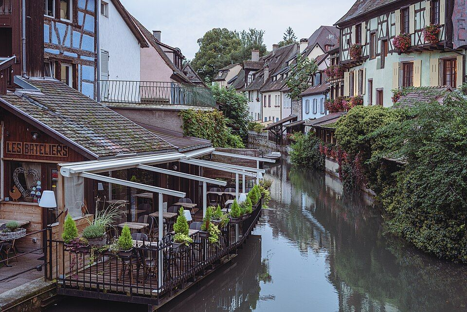
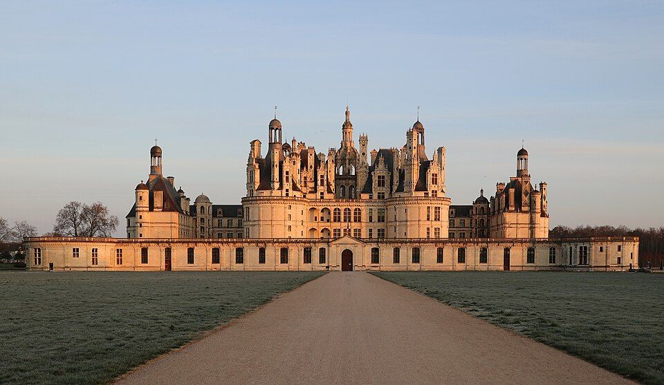
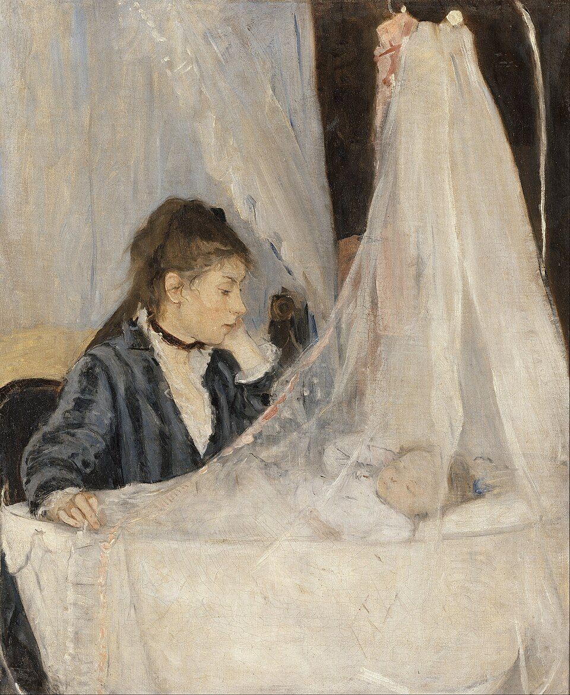
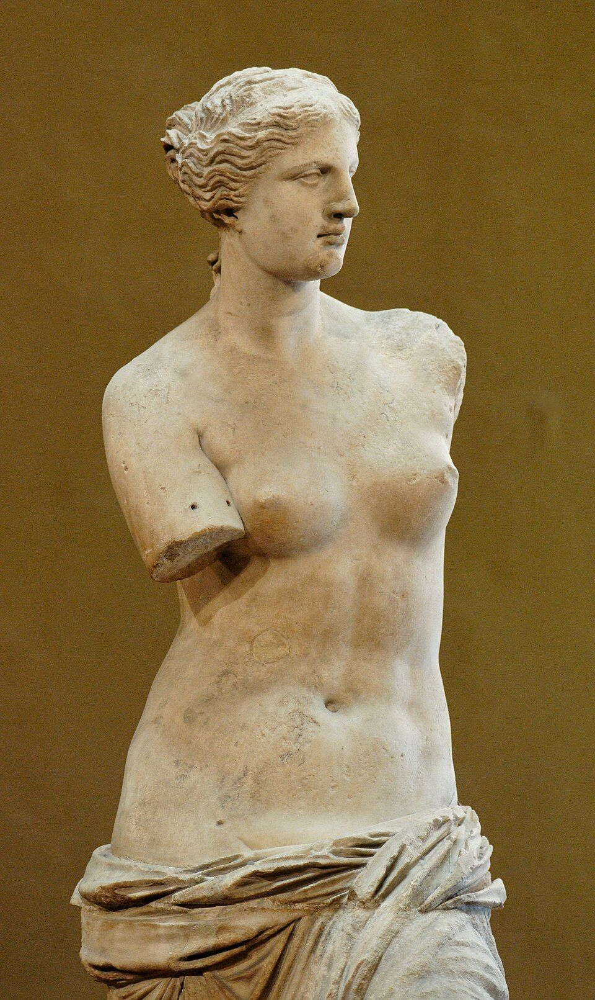
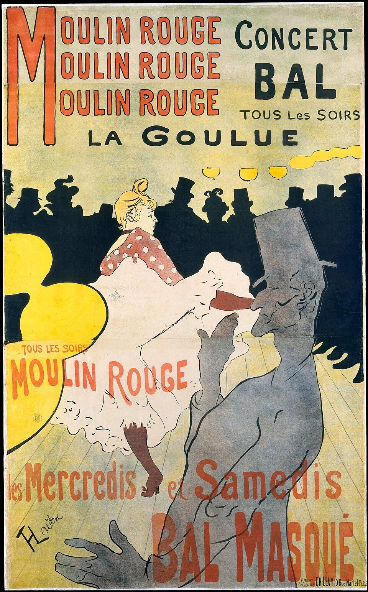
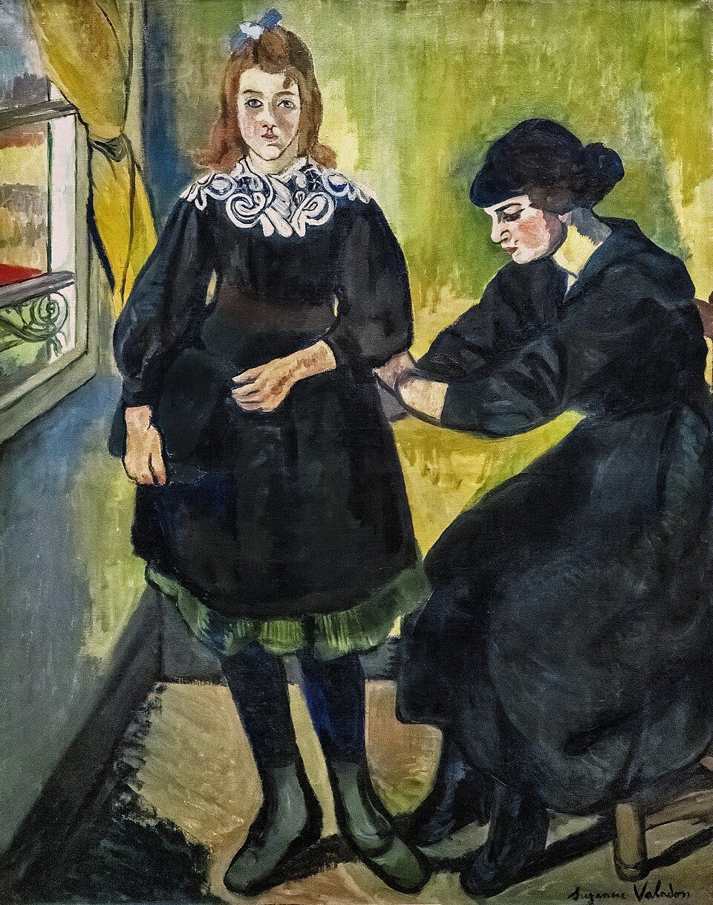
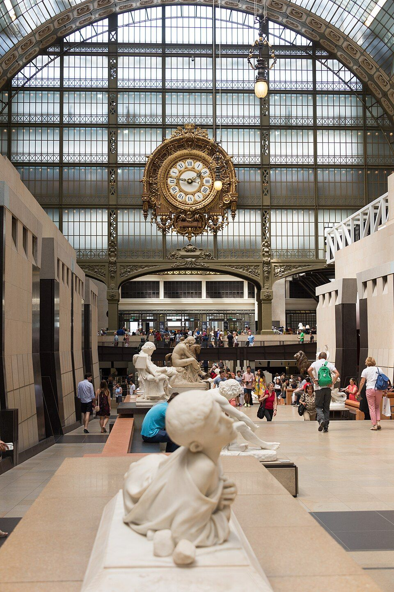

FABRIZIO · lundi 16 novembre 2026
Vocabulaire, grammaire et expressionLouer une voiture, partir skier · l'accord du participe passéNoleggiare un'auto, andare a sciare · l'accordo del participio passato
La Petite Venise, Colmar · Alsace
Fabrizio, voici la leçon d'aujourd'hui : le vocabulaire, l'accord du participe passé, quatre exercices et une petite réflexion. Touchez une carte pour la retourner, 🔊 pour écouter et IT pour la traduction.
Fabrizio, ecco la lezione di oggi: il lessico, l'accordo del participio passato, quattro esercizi e una breve riflessione. Tocchi una carta per girarla, 🔊 per ascoltare e IT per la traduzione.
1
Vocabulaire
Lessico

gérer
verbe du 1er groupe : je gère, nous gérons
verbo del 1° gruppo: je gère, nous gérons
Le château de Chambord, 1519-1547 · Loir-et-Cher
↻ toucher pour retourner · toccare per girare
gérer · gestire
S'occuper de l'organisation, de l'argent ou d'une situation. À l'oral, « Je gère ! » veut dire « Tout est sous contrôle ».
Occuparsi dell'organizzazione, del denaro o di una situazione. Nel parlato, «Je gère !» significa «È tutto sotto controllo».
Il gère une petite agence de location de voitures.
Gestisce una piccola agenzia di noleggio auto.
Ne t'inquiète pas pour les bagages, je gère !
Non preoccuparti per i bagagli, ci penso io!
↻
durer
verbe du 1er groupe
verbo del 1° gruppo
Le pont du Gard, Ier siècle · Vers-Pont-du-Gard
↻ toucher pour retourner · toccare per girare
durer · durare
Avoir une certaine durée. Dans « qui dure deux ans », qui remplace le nom qui précède.
Avere una certa durata. In «qui dure deux ans», qui sostituisce il nome che precede.
J'ai signé un contrat de location qui dure deux ans.
Ho firmato un contratto di noleggio che dura due anni.
Les travaux sur le pont ont duré deux mois.
I lavori sul ponte sono durati due mesi.
↻

avoir
verbe du 3e groupe, très irrégulier : j'ai, tu as, il a, nous avons, vous avez, ils ont
verbo del 3° gruppo, molto irregolare
Le Berceau, Berthe Morisot, 1872 · Musée d'Orsay, Paris
↻ toucher pour retourner · toccare per girare
avoir · avere
Il exprime la possession, l'âge, les sensations (avoir froid, avoir faim) et il sert d'auxiliaire au passé composé. Expressions utiles : avoir besoin de, avoir l'air, avoir lieu.
Esprime il possesso, l'età, le sensazioni (avere freddo, avere fame) e fa da ausiliare nel passé composé. Espressioni utili: avoir besoin de (avere bisogno di), avoir l'air (sembrare), avoir lieu (avere luogo).
Dans ce tableau, la jeune mère a l'air pensive.
In questo quadro, la giovane madre sembra pensierosa.
Nous avons besoin d'une voiture plus grande pour les skis.
Abbiamo bisogno di un'auto più grande per gli sci.
↻
rendre la voiture
rendre : verbe du 3e groupe (je rends, j'ai rendu)
rendre: verbo del 3° gruppo
L'Arc de triomphe et la place de l'Étoile · Paris
↻ toucher pour retourner · toccare per girare
rendre la voiture · riconsegnare, restituire l'auto
Rendre = redonner à quelqu'un ce qu'il nous a prêté ou loué : une voiture de location, un livre, des clés.
Rendre = ridare a qualcuno ciò che ci ha prestato o noleggiato: un'auto a noleggio, un libro, delle chiavi.
Je dois rendre la voiture à l'agence avant dix-huit heures.
Devo riconsegnare la macchina all'agenzia entro le diciotto.
N'oublie pas de rendre les clés en partant.
Non dimenticare di restituire le chiavi quando parti.
↻
l'assurance
nom féminin
sostantivo femminile
La place de la Concorde et l'obélisque de Louxor · Paris
↻ toucher pour retourner · toccare per girare
l'assurance · l'assicurazione
Le contrat qui paie en cas d'accident ou de dommage. On prend ou on souscrit une assurance.
Il contratto che paga in caso di incidente o di danno. Si prende o si stipula un'assicurazione.
J'ai pris l'assurance tous risques pour être tranquille.
Ho preso l'assicurazione kasko per stare tranquillo.
L'assurance ne couvre pas les dommages sur les pneus.
L'assicurazione non copre i danni agli pneumatici.
↻

la voiture a été marquée
marquer : verbe du 1er groupe
marquer: verbo del 1° gruppo
La Vénus de Milo, vers 150-125 av. J.-C. · Musée du Louvre
↻ toucher pour retourner · toccare per girare
la voiture a été marquée · l'auto è stata segnata, presenta segni di danni
Marquée = qui porte des marques : une rayure (un graffio), une bosse (un'ammaccatura). Plus formel : elle présente des signes de dommages.
Marquée = che porta dei segni: une rayure (un graffio), une bosse (un'ammaccatura). Più formale: elle présente des signes de dommages (presenta segni di danni).
L'employé a vu que la portière avait été marquée.
L'impiegato ha visto che la portiera era stata segnata.
La carrosserie présente des signes de dommages à l'arrière.
La carrozzeria presenta segni di danni sul retro.
↻

rendre un service
expression
espressione
Moulin-Rouge, La Goulue, Henri de Toulouse-Lautrec, 1891 · affiche
↻ toucher pour retourner · toccare per girare
rendre un service · fare un favore
Rendre un service à quelqu'un = l'aider. On dit aussi : « Tu peux me rendre service ? »
Rendre un service à quelqu'un = aiutarlo, fargli un favore. Si dice anche: «Tu peux me rendre service ?» (Mi fai un favore?)
Tu peux me rendre un service ? Va chercher les forfaits.
Mi fai un favore? Vai a prendere gli skipass.
Merci, tu m'as rendu un grand service !
Grazie, mi hai fatto un grande favore!
↻

ne pas laisser traîner
expression ; à l'impératif : ne laisse pas traîner
espressione; all'imperativo: ne laisse pas traîner
La Couturière, Suzanne Valadon, 1914 · Centre Pompidou, Paris
↻ toucher pour retourner · toccare per girare
ne pas laisser traîner · non lasciare in giro
Laisser traîner quelque chose = le laisser n'importe où, en désordre. À l'impératif négatif : Ne laisse pas traîner…
Laisser traîner qualcosa = lasciarlo in giro, in disordine. All'imperativo negativo: Ne laisse pas traîner… (Non lasciare in giro…)
Ne laisse pas traîner tes gants dans la voiture.
Non lasciare in giro i guanti in macchina.
Il ne faut pas laisser traîner les papiers de l'assurance.
Non bisogna lasciare in giro i documenti dell'assicurazione.
↻
récupérer
verbe du 1er groupe : je récupère, nous récupérons
verbo del 1° gruppo
La pyramide du Louvre, Ieoh Ming Pei, 1989 · Paris
↻ toucher pour retourner · toccare per girare
récupérer · recuperare, ritirare, andare a prendere
Reprendre une chose ou aller chercher une personne.
Riprendere una cosa oppure andare a prendere una persona.
Je dois récupérer les clés à l'agence à neuf heures.
Devo ritirare le chiavi all'agenzia alle nove.
Tu peux récupérer les enfants à l'école de ski ?
Puoi andare a prendere i bambini alla scuola di sci?
↻
certains endroits, certains lieux
adjectif indéfini + nom masculin pluriel
aggettivo indefinito + sostantivo maschile plurale
La cité de Carcassonne · Aude
↻ toucher pour retourner · toccare per girare
certains endroits, certains lieux · certi posti, certi luoghi
Certains s'accorde : certains endroits, certaines pistes. Endroit est plus courant, lieu plus soutenu.
Certains si accorda: certains endroits, certaines pistes. Endroit è più comune, lieu più formale.
Dans certains endroits, il est interdit de se garer.
In certi posti è vietato parcheggiare.
Certains lieux de la cité sont ouverts seulement l'été.
Certi luoghi della città fortificata sono aperti solo d'estate.
↻
permettre
verbe du 3e groupe : je permets, nous permettons, j'ai permis
verbo del 3° gruppo
Le palais Garnier, Charles Garnier, 1875 · Paris
↻ toucher pour retourner · toccare per girare
permettre · permettere
Permettre à quelqu'un de + infinitif. Une chose peut aussi permettre de faire quelque chose.
Permettre à quelqu'un de + infinito. Anche una cosa può permettere di fare qualcosa.
Ce forfait permet de skier dans trois stations.
Questo skipass permette di sciare in tre stazioni.
Le loueur nous a permis de rendre la voiture plus tard.
Il noleggiatore ci ha permesso di riconsegnare l'auto più tardi.
↻
sur les pistes de ski
expression
espressione
Les sommets des Alpes au-dessus des nuages
↻ toucher pour retourner · toccare per girare
sur les pistes de ski · sulle piste da sci
On dit sur les pistes (on est dessus) et une piste de ski, avec de.
Si dice sur les pistes (ci si trova sopra) e une piste de ski, con de.
Il y avait beaucoup de monde sur les pistes ce matin.
C'era molta gente sulle piste stamattina.
Sur les pistes de ski, il faut porter un casque.
Sulle piste da sci bisogna portare il casco.
↻
le nombre de personnes
nom masculin
sostantivo maschile
La galerie des Glaces, 1678-1684 · Château de Versailles
↻ toucher pour retourner · toccare per girare
le nombre de personnes · il numero di persone
Le nombre = une quantité : il répond à la question combien ? Le numéro = un chiffre qui identifie : numéro de téléphone, de chambre, de place. En italien, « numero » sert pour les deux, mais pas en français.
Le nombre = una quantità: risponde alla domanda quanti? Le numéro = un numero che identifica: numero di telefono, di camera, di posto. In italiano «numero» vale per entrambi, in francese no.
Le nombre de personnes est limité à six par chalet.
Il numero di persone è limitato a sei per chalet.
Quel est le numéro de ta chambre ?
Qual è il numero della tua camera?
↻

au dernier moment
locution adverbiale
locuzione avverbiale
L'horloge du musée d'Orsay, ancienne gare de 1900 · Paris
↻ toucher pour retourner · toccare per girare
au dernier moment · all'ultimo momento
Juste avant qu'il ne soit trop tard.
Appena prima che sia troppo tardi.
Il a réservé la voiture au dernier moment.
Ha prenotato la macchina all'ultimo momento.
Ne fais pas tes bagages au dernier moment !
Non fare le valigie all'ultimo momento!
↻
2
Grammaire : l'accord du participe passé
Grammatica: l'accordo del participio passato
Quand le participe passé s'accorde-t-il ?
Quando si accorda il participio passato?
Le participe passé s'accorde comme un adjectif : + e au féminin, + s au pluriel, + es au féminin pluriel. Avec certains participes, on entend l'accord : pris → prise, mis → mise, écrit → écrite, ouvert → ouverte, fait → faite.
Il participio passato si accorda come un aggettivo: + e al femminile, + s al plurale, + es al femminile plurale. Con alcuni participi l'accordo si sente: pris → prise, mis → mise, écrit → écrite, ouvert → ouverte, fait → faite.
A. Avec l'auxiliaire être
A. Con l'ausiliare être
Le participe passé s'accorde avec le sujet, en genre et en nombre. C'est aussi le cas à la voix passive.
Il participio passato si accorda con il soggetto, in genere e numero. Vale anche per la forma passiva.
Ma sœur est arrivée au dernier moment.
Mia sorella è arrivata all'ultimo momento.
Nos amis sont partis skier.
I nostri amici sono andati a sciare.
La décision a été prise hier.
La decisione è stata presa ieri.
B. Avec l'auxiliaire avoir
B. Con l'ausiliare avoir
Le participe passé ne s'accorde jamais avec le sujet. Il s'accorde avec le COD seulement si le COD est placé avant le verbe.
Il participio passato non si accorda mai con il soggetto. Si accorda con il complemento oggetto (COD) solo se il COD si trova prima del verbo.
Ma femme a pris la voiture. (COD après : pas d'accord)
Mia moglie ha preso la macchina. (COD dopo: nessun accordo)
La voiture ? Je l'ai prise hier. (l' = la voiture, avant le verbe)
La macchina? L'ho presa ieri.
La voiture que j'ai prise est rouge. (que = la voiture)
La macchina che ho preso è rossa.
Quelles photos as-tu prises ?
Quali foto hai fatto?
💡 Comme en italien avec lo, la, li, le : « la macchina, l'ho presa ». Mais attention : en français, on accorde aussi après que, alors qu'en italien on dit « la macchina che ho preso ».
Come in italiano con lo, la, li, le: «la macchina, l'ho presa». Ma attenzione: in francese si accorda anche dopo que, mentre in italiano si dice «la macchina che ho preso».
C. COD ou COI ? Jamais d'accord avec le COI
C. COD o COI? Mai accordo con il COI
Le COD se construit sans préposition : il répond à la question qui ? ou quoi ? Le COI se construit avec une préposition (à, de) : il répond à à qui ? ou de quoi ?
Il COD si costruisce senza preposizione: risponde alla domanda chi? o che cosa? Il COI si costruisce con una preposizione (à, de): risponde a a chi? o di che cosa?
J'ai appelé Julie. → Je l'ai appelée. (appeler quelqu'un : COD)
Ho chiamato Julie. → L'ho chiamata.
J'ai téléphoné à Julie. → Je lui ai téléphoné. (téléphoner à quelqu'un : COI)
Ho telefonato a Julie. → Le ho telefonato.
Les amies à qui j'ai écrit sont à Chamonix. (écrire à : COI, pas d'accord)
Le amiche a cui ho scritto sono a Chamonix.
💡 Avec lui, leur, à qui : jamais d'accord.
Con lui, leur, à qui: mai accordo.
D. Avec les verbes pronominaux
D. Con i verbi pronominali
On utilise toujours être, mais l'accord dépend de la fonction du pronom (me, te, se, nous, vous). Posez-vous la question : le pronom est-il COD ou COI ?
Si usa sempre être, ma l'accordo dipende dalla funzione del pronome (me, te, se, nous, vous). Bisogna chiedersi: il pronome è COD o COI?
1. Le pronom est COD → accord avec le sujet
1. Il pronome è COD → accordo con il soggetto
Elle s'est assise près de la cheminée. (asseoir qui ? se)
Si è seduta vicino al camino.
Ils se sont rencontrés sur les pistes. (rencontrer quelqu'un)
Si sono conosciuti sulle piste.
2. Le pronom est COI → pas d'accord
2. Il pronome è COI → nessun accordo
Elles se sont téléphoné hier soir. (téléphoner à quelqu'un)
Si sono telefonate ieri sera.
Elle s'est permis une remarque. (permettre à soi-même)
Si è permessa un'osservazione.
3. Un COD est placé après le verbe → pas d'accord
3. C'è un COD dopo il verbo → nessun accordo
Elle s'est cassé la jambe sur les pistes. (COD = la jambe, après)
Si è rotta la gamba sulle piste.
4. Les verbes toujours pronominaux → accord avec le sujet
4. I verbi sempre pronominali → accordo con il soggetto
Elle s'est souvenue de son rendez-vous au dernier moment. (se souvenir, s'en aller, s'enfuir…)
Si è ricordata del suo appuntamento all'ultimo momento.
💡 Attention à l'italien : « si sono telefonate », « si è permessa » s'accordent, mais en français se sont téléphoné, s'est permis restent invariables.
Attenzione all'italiano: «si sono telefonate», «si è permessa» si accordano, ma in francese se sont téléphoné, s'est permis restano invariabili.
3
Exercices
Esercizi
01
EXERCICE 1
Choisissez le bon mot.
Scelga la parola giusta.
1
Je dois ______ la voiture à l'agence avant midi.
Devo riconsegnare la macchina all'agenzia entro mezzogiorno.
Je dois rendre la voiture à l'agence avant midi.
Devo riconsegnare la macchina all'agenzia entro mezzogiorno.
2
Le ______ de personnes dans le chalet est limité à huit.
Il numero di persone nello chalet è limitato a otto.
Le nombre de personnes dans le chalet est limité à huit.
Il numero di persone nello chalet è limitato a otto.
3
Ne ______ pas traîner tes lunettes de ski sur la table !
Non lasciare in giro i tuoi occhiali da sci sul tavolo!
Ne laisse pas traîner tes lunettes de ski sur la table !
Non lasciare in giro i tuoi occhiali da sci sul tavolo!
4
Tu peux me ______ un service ? J'ai oublié mes gants.
Mi fai un favore? Ho dimenticato i guanti.
Tu peux me rendre un service ? J'ai oublié mes gants.
Mi fai un favore? Ho dimenticato i guanti.
5
Ce forfait ______ de skier dans toute la vallée.
Questo skipass permette di sciare in tutta la valle.
Ce forfait permet de skier dans toute la vallée.
Questo skipass permette di sciare in tutta la valle.
6
Il a annulé sa réservation au ______ moment.
Ha annullato la sua prenotazione all'ultimo momento.
Il a annulé sa réservation au dernier moment.
Ha annullato la sua prenotazione all'ultimo momento.
7
Dans ______ endroits, la neige est encore très dure.
In certi posti la neve è ancora molto dura.
Dans certains endroits, la neige est encore très dure.
In certi posti la neve è ancora molto dura.
8
L'agence a remarqué que la voiture présentait des signes de ______.
L'agenzia ha notato che la macchina presentava segni di danni.
L'agence a remarqué que la voiture présentait des signes de dommages.
L'agenzia ha notato che la macchina presentava segni di danni.
02
EXERCICE 2
Traduisez en français, puis comparez avec la correction.
Traduca in francese, poi confronti con la correzione.
1Devo riconsegnare la macchina domani mattina.
Je dois rendre la voiture demain matin.
Votre traduction était-elle correcte ? La sua traduzione era corretta?
2L'assicurazione dura due anni.
L'assurance dure deux ans.
Votre traduction était-elle correcte ? La sua traduzione era corretta?
3Mi fai un favore? Non lasciare in giro le chiavi.
Tu peux me rendre un service ? Ne laisse pas traîner les clés.
Votre traduction était-elle correcte ? La sua traduzione era corretta?
4Il numero di persone sulle piste era impressionante.
Le nombre de personnes sur les pistes était impressionnant.
Votre traduction était-elle correcte ? La sua traduzione era corretta?
5Devo andare a prendere i bambini alla scuola di sci.
Je dois récupérer les enfants à l'école de ski.
Votre traduction était-elle correcte ? La sua traduzione era corretta?
6Ha prenotato l'albergo all'ultimo momento.
Il a réservé l'hôtel au dernier moment.
Votre traduction était-elle correcte ? La sua traduzione era corretta?
03
EXERCICE 3
Conjuguez le verbe au temps indiqué.
Coniughi il verbo al tempo indicato.
rendre · passé composé
1
Hier, nous ______ la voiture à l'agence.
Ieri abbiamo riconsegnato la macchina all'agenzia.
Hier, nous avons rendu la voiture à l'agence.
Ieri abbiamo riconsegnato la macchina all'agenzia.
gérer · imparfait
2
Quand j'étais petit, mon père ______ un hôtel à la montagne.
Quando ero piccolo, mio padre gestiva un albergo in montagna.
Quand j'étais petit, mon père gérait un hôtel à la montagne.
Quando ero piccolo, mio padre gestiva un albergo in montagna.
récupérer · futur simple
3
Demain, je ______ les clés à neuf heures.
Domani ritirerò le chiavi alle nove.
Demain, je récupérerai les clés à neuf heures.
Domani ritirerò le chiavi alle nove.
aller · conditionnel présent
4
Si j'avais le temps, j'______ skier tous les week-ends.
Se avessi tempo, andrei a sciare tutti i fine settimana.
Si j'avais le temps, j'irais skier tous les week-ends.
Se avessi tempo, andrei a sciare tutti i fine settimana.
prendre · subjonctif présent
5
Il faut que tu ______ l'assurance tous risques.
Bisogna che tu prenda l'assicurazione kasko.
Il faut que tu prennes l'assurance tous risques.
Bisogna che tu prenda l'assicurazione kasko.
permettre · présent
6
Ce forfait nous ______ de skier partout.
Questo skipass ci permette di sciare dappertutto.
Ce forfait nous permet de skier partout.
Questo skipass ci permette di sciare dappertutto.
choisir · passé composé
7
Vous ______ une très belle voiture !
Avete scelto una macchina molto bella!
Vous avez choisi une très belle voiture !
Avete scelto una macchina molto bella!
venir · futur simple
8
Ils ______ au dernier moment, comme toujours.
Verranno all'ultimo momento, come sempre.
Ils viendront au dernier moment, comme toujours.
Verranno all'ultimo momento, come sempre.
tomber · plus-que-parfait
9
Quand nous sommes arrivés, la neige ______ toute la nuit.
Quando siamo arrivati, la neve era caduta tutta la notte.
Quand nous sommes arrivés, la neige était tombée toute la nuit.
Quando siamo arrivati, la neve era caduta tutta la notte.
ne pas laisser traîner · impératif
10
______ tes affaires dans l'entrée ! (tu)
Non lasciare in giro le tue cose nell'ingresso!
Ne laisse pas traîner tes affaires dans l'entrée !
Non lasciare in giro le tue cose nell'ingresso!
04
EXERCICE 4
Choisissez le bon participe passé. Écoutez bien : on entend la différence !
Scelga il participio passato giusto. Ascolti bene: la differenza si sente!
1
La voiture ? Je l'ai ______ hier soir.
La macchina? L'ho presa ieri sera.
La voiture ? Je l'ai prise hier soir.
La macchina? L'ho presa ieri sera.
💡 avoir + COD placé avant (l' = la voiture) → accord : prise
avoir + COD prima del verbo (l' = la macchina) → accordo: prise
2
Les clés ? Je les ai ______ dans ta poche.
Le chiavi? Le ho messe nella tua tasca.
Les clés ? Je les ai mises dans ta poche.
Le chiavi? Le ho messe nella tua tasca.
💡 avoir + COD placé avant (les = les clés, fém. pluriel) → mises
avoir + COD prima del verbo (les = le chiavi, femminile plurale) → mises
3
La lettre que j'ai ______ à l'agence est partie ce matin.
La lettera che ho scritto all'agenzia è partita stamattina.
La lettre que j'ai écrite à l'agence est partie ce matin.
La lettera che ho scritto all'agenzia è partita stamattina.
💡 avoir + que (= la lettre) placé avant → écrite
avoir + que (= la lettera) prima del verbo → écrite
4
Elle s'est ______ près de la cheminée.
Si è seduta vicino al camino.
Elle s'est assise près de la cheminée.
Si è seduta vicino al camino.
💡 pronominal, se = COD → accord avec le sujet : assise
verbo pronominale, se = COD → accordo con il soggetto: assise
5
J'ai ______ la porte du garage.
Ho aperto la porta del garage.
J'ai ouvert la porte du garage.
Ho aperto la porta del garage.
💡 avoir + COD placé après → pas d'accord : ouvert
avoir + COD dopo il verbo → nessun accordo: ouvert
6
Elles se sont ______ des cadeaux à Noël.
Si sono fatte dei regali a Natale.
Elles se sont offert des cadeaux à Noël.
Si sono fatte dei regali a Natale.
💡 se = COI (offrir à) et COD après (des cadeaux) → offert
se = COI (offrir à) e COD dopo il verbo (des cadeaux) → offert
7
La voiture a été ______ chez le carrossier.
La macchina è stata riverniciata dal carrozziere.
La voiture a été repeinte chez le carrossier.
La macchina è stata riverniciata dal carrozziere.
💡 voix passive avec être → accord avec le sujet : repeinte
forma passiva con être → accordo con il soggetto: repeinte
8
Ma sœur s'est ______ à rire au dernier moment.
Mia sorella si è messa a ridere all'ultimo momento.
Ma sœur s'est mise à rire au dernier moment.
Mia sorella si è messa a ridere all'ultimo momento.
💡 se mettre à : se = COD → accord avec le sujet : mise
se mettre à: se = COD → accordo con il soggetto: mise
9
Je leur ai ______ la vérité.
Ho detto loro la verità.
Je leur ai dit la vérité.
Ho detto loro la verità.
💡 leur = COI, la vérité = COD après → pas d'accord : dit
leur = COI, la vérité = COD dopo il verbo → nessun accordo: dit
10
Quelle décision as-tu ______ finalement ?
Che decisione hai preso alla fine?
Quelle décision as-tu prise finalement ?
Che decisione hai preso alla fine?
💡 avoir + COD placé avant (quelle décision) → prise
avoir + COD prima del verbo (quelle décision) → prise
4
Expression et réflexion
Espressione e riflessione
Louer ou posséder ? Aujourd'hui, on loue une voiture, des skis, un appartement pour les vacances. Est-ce que posséder les choses nous rend plus libres, ou est-ce que c'est le contraire ?
Noleggiare o possedere? Oggi si noleggiano un'auto, gli sci, un appartamento per le vacanze. Possedere le cose ci rende più liberi, o è il contrario?
Pour vous aider · Per aiutarla
• Qu'est-ce que vous aimez posséder ? Qu'est-ce que vous préférez louer ? Pourquoi ?
Che cosa le piace possedere? Che cosa preferisce noleggiare? Perché?
• Posséder un objet, est-ce aussi devoir le gérer, l'assurer, le réparer ?
Possedere un oggetto significa anche doverlo gestire, assicurare, riparare?
• Selon vous, notre attachement aux objets dit-il quelque chose de nous ?
Secondo lei, il nostro attaccamento agli oggetti dice qualcosa di noi?
D'un côté…, de l'autre…Da un lato…, dall'altro…Il me semble que…Mi sembra che…Ce qui compte, c'est…Ciò che conta è…Je ne suis pas sûr que + subjonctifNon sono sicuro che + congiuntivo
Votre texte est enregistré automatiquement. Il suo testo viene salvato automaticamente.
À revoir · da ripassare
Da ripassare: ogni punto rimanda alla spiegazione.
Vos réponses restent enregistrées sur cet appareil. Pour continuer sur un autre appareil, créez un lien et ouvrez-le là-bas.
Le sue risposte restano salvate su questo dispositivo. Per continuare su un altro dispositivo, crei un link e lo apra lì.